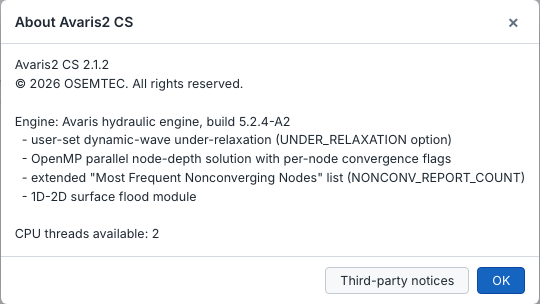
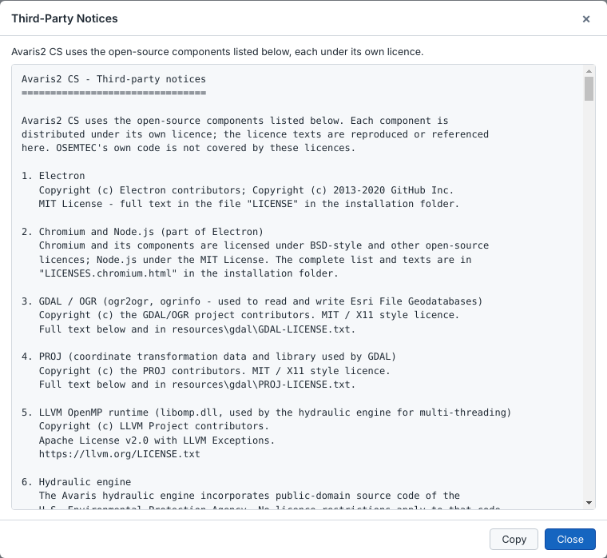

Select by Attribute, theme Where conditions, custom theme variables and flag conditions all use the same expression language. Each expression is evaluated once for every object of a layer.
| Kind | Operators |
|---|---|
| Arithmetic | + - * / % ^ and parentheses |
| Comparison | = == != <> > >= < <=, and like with % as wildcard (name like 'J_5%') |
| Logical | and or not (also && || !) |
| Values | numbers, 'text', true, false, null |
| Group | Functions |
|---|---|
| Math | abs sqrt min max round floor ceil log log10 exp pow |
| Text | len upper lower contains startswith endswith num str |
| Logic | iif(condition, a, b), isnull(x) |
Time functions read every reporting step of the loaded results. All durations are in minutes, and c is a condition.
| Function | Returns | Changes with the time step? |
|---|---|---|
dur(c) | Total time c was true from the start up to the current time step | Yes |
run(c) | How long c has been true without a break at the current time step (0 when false now) | Yes |
win(c, W) | Time c was true within the last W minutes | Yes |
totdur(c) | Total time c was true in the whole simulation | No |
maxrun(c) | Longest uninterrupted period c was true | No |
maxwin(c, W) | Most time c was true within any W-minute window | No |
first(c) | Elapsed time when c was first true (null if never) | No |
peak(x) | Highest value of x over the simulation (x may itself use the functions above) | No |
Expressions that change with the time step are shown during playback (▶). Whole-run expressions are shown outside playback. The first use of a time function reads the results once in the background; later uses are instant.
The field list in each dialog shows every field with a description. The main groups are:
| Group | Examples |
|---|---|
| General | name tag descrip type x y; links also have usNode dsNode |
| Properties | Nodes: elev maxDepth surDepth aPonded; links: length roughness inOffset outOffset shape geom1 barrels; subcatchments: area imperv width slope outlet gage |
| Computed | Nodes: rimElev crownElev maxVolume nLinks; links: slope diam usInvert dsInvert fullFlow mapLength; subcatchments: polyArea |
| Results, current time step | Nodes: rptDepth rptHgl rptVolume rptLatInflow rptTotInflow rptFlooding; links: rptFlow rptDepth rptVel rptCapacity; subcatchments: rptRainfall rptRunoff rptInfiltration; system: sysRain |
| Results, whole run | Nodes: rptMaxDepth rptMaxHgl rptFreeboard rptHrsSurcharged rptHrsFlooded rptFloodVol; links: rptMaxFlow rptMaxVel rptMaxCapacity rptMfFlow rptMfDepth rptSurchargeHrs |
| Neighbours | Links: the upstream and downstream node fields with us_ and ds_, for example us_rptDepth or ds_type. Subcatchments: the outlet node fields with out_. |
// conduits that ran more than 90 % full
rptMaxCapacity > 0.9
// nodes that flooded for more than 30 minutes in total
totdur(rptFlooding > 0) > 30
// level 2 when surcharged for 60 min without a break, else 1 when surcharged now, else 0
iif(run(rptHgl > crownElev) >= 60, 2, iif(rptHgl > crownElev, 1, 0))
// pipes whose downstream node is an outfall
ds_type = 'OUTFALL'| Keys | Action |
|---|---|
| Ctrl+N / Ctrl+O / Ctrl+S | New / Open / Save |
| Ctrl+Shift+S | Save As |
| Ctrl+Z / Ctrl+Y | Undo / Redo |
| Ctrl+C / Ctrl+V | Copy / paste objects |
| Ctrl+A | Select all |
| Ctrl+F | Find an object |
| Del | Delete the selection |
| Esc | Cancel the current tool, clear the selection |
| F5 | Run simulation |
| Home | Zoom to the whole model |
| T | Hide or show theme colouring (in the partition view: the partition markings) |
| Mouse wheel | Zoom |
| Space+drag, or middle mouse button | Pan |
| Ctrl+click | Add to or remove from the selection |
| Shift+click | Choose between overlapping objects |
| Backspace | Remove the last vertex while drawing |
| Enter or double-click | Finish a polygon or line |
Avaris2 CS runs simulations with the Avaris hydraulic engine: a dynamic-wave, kinematic-wave and steady-flow solver for urban drainage networks, with rainfall-runoff, infiltration, groundwater, snowmelt, RDII, LID and water quality. Compared with standard solvers for the .inp format, it adds:
UNDER_RELAXATION, 0.1–1.0; the standard value is 0.5).NONCONV_REPORT_COUNT). Outfalls are excluded from the statistics.[GROUPS] written by Avaris DS, are skipped instead of causing an error.;;@OSEM comment lines.
A model saved by Avaris2 CS can also be run by EPA SWMM 5.2. The Avaris-specific settings are then ignored.
Click More info ▸ Run anyway. See Install Avaris2 CS.
The basemap needs an internet connection and a correct coordinate system. Open the coordinate system dialog and check where the model centre lands. A wrong .prj file next to the model is the most common cause. See Coordinate systems and basemaps.
The message in the read-only notice tells you why: no licence, an expired licence, a licence for another computer, or a computer clock set earlier than the last use. See Licensing and registration.
In %APPDATA%\OsemCM: user accounts, recent files, layer styles, themes and preferences. Model-specific settings are stored next to the model.
Avaris2 CS © 2026 OSEMTEC. All rights reserved.
Avaris2 CS includes open-source components that remain under their own licences. The full notices are in THIRD-PARTY-NOTICES.txt in the installation folder, and are shown in the program with Help ▸ About ▸ Third-party notices, where they can also be copied.

| Component | Use | Licence |
|---|---|---|
| Electron, Chromium, Node.js | Application framework | MIT, BSD-style and others (LICENSE, LICENSES.chromium.html) |
| GDAL / OGR | Esri File Geodatabase read and write | MIT / X11 |
| PROJ | Coordinate transformation data used by GDAL | MIT / X11 |
| LLVM OpenMP runtime | Multi-threading of the hydraulic engine | Apache 2.0 with LLVM Exceptions |
| Public-domain code of the U.S. Environmental Protection Agency | Parts of the hydraulic engine | Public domain |
Basemaps are loaded from OpenStreetMap (© OpenStreetMap contributors, ODbL) and OpenTopoMap (© OpenTopoMap, CC-BY-SA; elevation SRTM). The attribution is shown in the lower-right corner of the map and must not be removed from exported or published maps. Please download tiles for offline use only for your project area: the tile servers are run by volunteers.
| Version | Highlights |
|---|---|
| 2.8 | Auto Calibration complete (HPS): parameter groups and ranges, sensitivity analysis, acceptance criteria (CIWEM/WaPUG, MSDGC 2013, EPA 1999), monitor weights, automatic calibration (NSGA-II, SCE-UA, DDS) with parallel event runs, options, scorecard, diagnosis, apply as user System, calibration report. |
| 2.7 | Simulation Options ▸ Files tab for interface files (hot start, rainfall …) with relative paths. Auto Calibration (HPS) steps 1–2: mapping, automatic reading of survey files, rainfall events, data cleaning with confirmation, data checks. |
| 2.6 | High Performance Simulation edition. 2D results: velocity, Defra hazard rating, depth × velocity, arrival time, flow arrows, heat-map rendering, 2D cell graph, 2D Flood Analysis (areas by class, statistics by zone, comparison of 1D-2D runs, cross section), flood extent shapefiles and GeoTIFF grids. Coupled parallel 1D-2D runs. Analysis group on the Simulation tab. Scenario Comparison lists every run of the model and drives the graphs. Scenarios panel replaced by named runs. |
| 2.5 | Print Layout, Dry Weather Flow generator, Infer & Clean, CSO Statistics. |
| 2.4 | Coupled parallel simulation of a partitioned model, results merged into one run. |
| 2.3 | Model partition with automatic cut points, adjustment and regeneration. |
| 2.2 | Licences per computer (1D / 1D-2D; 30 days, 1 year or several years): request with your osemtec.com account by e-mail (Gmail, Outlook.com, Microsoft 365 or e-mail program), offline activation; read-only mode without a licence. Reverse flow flag based on the time with flow. Built-in flags can be edited (conditions, parameters) and reset. |
| 2.1 | Renamed Avaris2 CS. Basemap tile cache and Download for Offline Use. Third-party notices in Help ▸ About. Attribute tables for imported GIS layers. Reverse-flow flag based on the share of the simulation time. The Flag panel keeps its scroll position. The change-log filter is cleared when another object is selected. |
| 2.0.14 | Flag panel: 12 built-in rules plus custom flags, editable thresholds, units that follow the model, ▶ / Σ display, colours with No fill. |
| 2.0.13 | Level-of-detail map drawing for very large models. |
| 2.0.12 | High-resolution icons. WKT2 and Hotine Oblique Mercator coordinate systems, with a check of where the model centre lands. Diagnostics. |
| 2.0.11 | Time functions in expressions. Report viewer with an Insights page. Eye button and Locator. |
| 2.0 | Ribbon interface, Layer Theme Editor, 2D flood module, scenario comparison, users and change history, Avaris engine settings. |
This guide describes Avaris2 CS 2.6. © 2026 OSEMTEC.